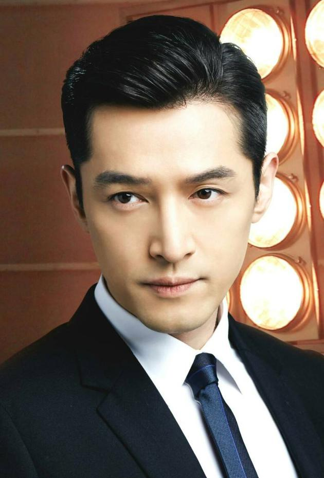
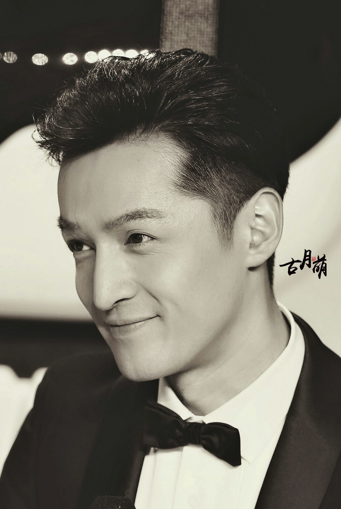
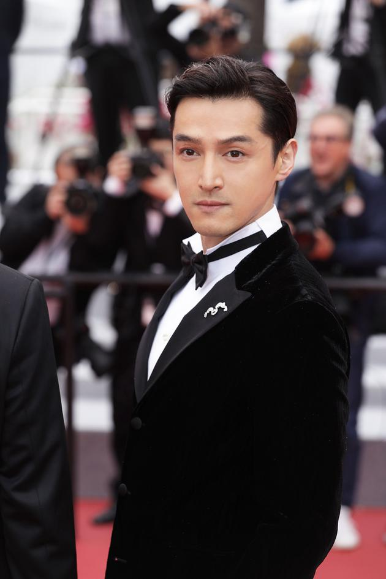

胡歌
胡歌(1982年9月20日)，是出身上海的演员及歌手。
重要事件
-
2005年，在电视剧《仙剑奇侠传》中饰演主角李逍遥，并因而成为当时中国最受欢迎的演员之一。
-
2012年，在电视剧《辛亥革命》饰演林觉民，获第31届百花奖最佳新人奖项提名。
-
2015年，在电视剧《琅琊榜》之演出，获颁第22届白玉兰奖最佳男主角、第28届中国电视金鹰奖观众喜爱的男演员及最具人气男演员、2015国剧盛典最佳男主角等奖项。
成就和荣誉
-
2005年7月参加“2005搜狗美女野兽登山队攀登启孜峰暨西藏公益行” 活动 。
- 2007年8月为迎接08上海特奥会
- 2008年5月录制赈灾视频，问候汶川地震灾区的人民，并捐款10万。
-
2009年10月以去世好友张冕名义捐赠的希望小学建成，亲赴云南威信验收小学，完成心愿。
-
2010年11月参与湖南卫视节目《我在你身边》，远赴湘西山区，给乡里小孩们送了书包画笔洗发膏等礼物，为他们做篮球架，做饭，并资助了一位休学的9岁女孩符桂兰。
-
2010年12月出席在广州中山纪念馆举行的南方“华人慈善盛典”并献唱歌曲。
- 2011年1月为“温暖玉树，雪中送炭”活动捐煤50吨。
- 2011年4月受邀担任百度贴吧公益爱心大使.
- 2011年6月担任“增爱•圆梦”百校结对慈善行动圆梦大使。
- 2012年11月参加“分享星生活，提高正能量”明星慈善网络公益拍卖活动。
- 2012年12月出席“增爱之夜 照亮星空”
-
2013年6月受邀担任绿色江河NGO守护斑头雁形象大使及志愿者代表，经青海格尔木到达长江源头，进行为期一周环保公益之旅。
-
2013年8月加盟陈坤发起的公益活动“行走的力量”。
2013年9月出席公益组织“Think
- 2013年9月赴云南威信看望他所捐助的希望小学的孩子们。
-
2014年1月接受科颜氏邀请，携手视觉艺术家马良，设计了科颜氏高保湿面霜“温暖•爱凝聚”儿童公益限量版封面。
- 2014年9月参加真力时致力关爱孤独症儿童的“开心计划”。
-
2016年7月重回青海，以志愿者身份，参与绿色江河NGO在长江源的生态环境保护专案。
-
2018年10月再次重回青海，以志愿者身份，在长江源拍摄公益广告及参加生态环境保护活动。
-
2018年11月15日参加上海国际货币“慈善日”，作为明星经纪人当日募款268余万元，该款项将全数捐赠至相关慈善机构。
-
2019年7月2日到7月23日又一次踏上高原，以普通志愿者的身份参加长江源环保工作，足迹遍及唐古拉驿站，格尔木驿站，长江源无人区，沱沱河，班德湖等。
主要作品
| 年份 |
剧名 |
角色 |
| 1999年 | 国歌 | 大厅侍卫 |
| 2002年 | 假装没感觉 | 侃侃 |
| 2003年 | 疑神疑鬼 | 沈朗 |
| 2006年 | 第601个电话 | 晓文 |
| 2008年 | 剑蝶 | 马承恩 |
| 2011年 | 辛亥革命 | 林觉民 |
| 2012年 | DIVA华丽之后 | 胡明 |
| 2014年 | 大话天仙 | 黑帝王使者 |
| 2016年 | 那年夏天你去了哪里 | 袁雎 |
| 2018年 | 你好，之华 | 张超客串 |
| 2019年 | 攀登者 | 杨光 |
| 2019年 | 南方车站的聚会 | 周泽农 |
生活照



生平
1982年胡歌在上海出生。
1989年，他被上海电视台小荧星艺术团选中，开始学习表演，这是他最早的舞台。
1994年毕业于上海市向阳小学，1998年毕业于上海市第二中学初中部
2001年毕业于上海市第二中学高中部。胡歌在中学阶段曾担任学校广播台台长、学校合唱团团长和上海市徐汇区学生话剧团负责人。
1997年，胡歌开始担任上海教育电视台《阳光少年》栏目主持人。
1999年，胡歌还在上海东方广播电台兼任主持人和记者，他也利用课余时间拍摄广告。这些兼职工作是他职业生涯的开端。
2001年，胡歌同时被中央戏剧学院导演系和上海戏剧学院表演系录取，后因多种原因选择留在上海入读上海戏剧学院表演系，并于2005年7月毕业。
胡歌在大学二年级时签约了经纪公司-唐人影视。签约后出演的第一部影视作品是展现亲情爱情的电视剧《蒲公英》。